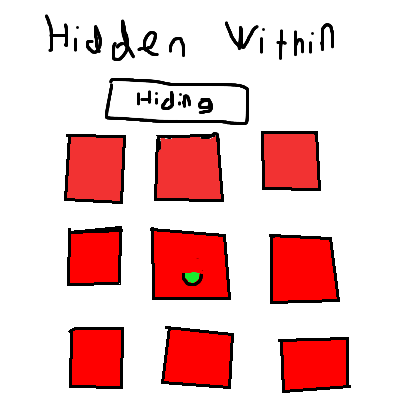
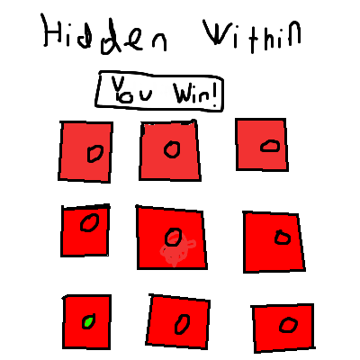

Hidden Within
Concept
- Find the green coin hidden within the deck of cards.
Genre
- 2D Casual Memory Game
Platform
- The platform right now is PC only but I could add breakpoints to make it more mobile friendly.
Story
- There currently is no story to the game.
Aesthetics
-
The setting of the game is going to take place within a casino. This means that the
background is going contain many bright, flashing colors, while having a carpety,
arcade like aesthetic. There will also be prominent usage of black, white, and red
to mimic typical colors of cards.
Gameplay
- After the player presses the start button, a 3 by 3 grid of cards is going to be
shown within the site. A green coin is going to be placed within one of the cards.
The cards will be randomly shuffled with the green coin hidden within the cards.
Once the cards are shuffled, the player must decide which card stores the coin. If
they click on the right card, they win. This game only uses the mouse to decide which
card they think the coin is hidden in.
Mockups
- Hiding Screen

- Win Screen

Other Notes
-
Other potintial ideas I have include a high score section, using Pixi for
design, creating enemies to steal cards and distract the player,
and adding a hard mode where the cards are 4x4 instead of 3x3.
-
My original idea was a puzzle platformer but I changed it to this because I feel that it's
simpler to program and works much easier with the DOM model.
About the Developer
- Hi everyone! My name is Adam Abramson and I'm a 2nd year Game Design and Development major.
I find my best skills to be level design, story writing, and most of all, creativity.